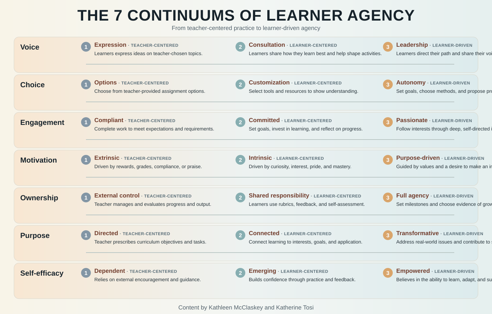

1. Choose
Select or adapt an inquiry question, project role and topic that connect to the shared goals.
Curriculum · three pathways · one shared core
Teach useful knowledge clearly. Give learners meaningful choices about the route, project and evidence. Keep the learning goals visible for families and facilitators.
Draft framework · enrichment, not accreditationPick one pathway per learner
Color helps you scan the columns; pathway names and labels carry the meaning without color, too.
| At a glance | Liberland AcademyStructured lessons · warm yellow | UnSchoolMentored projects · soft green | LIBERVERSE Learning LabDigital learning · soft blue |
|---|---|---|---|
| Good fit for | Learners who enjoy clear steps and a steady sequence. | Learners with a question or interest they want to pursue in depth. | Learners curious about digital life, data, coding and AI. |
| Learning shape | Eight units, proposed as four lessons each: 32 lessons total. | Three learner-chosen projects, each mapped to shared outcomes. | Six modules per age band, plus an applied capstone. |
| Learner choices | Choose questions, roles and ways to show learning within each unit. | Choose the project question, work plan, role and final format with a mentor. | Choose examples, project format and paper, audio, visual or digital evidence. |
| Evidence of learning | Portfolio work, short knowledge checks and a final explanation or product. | Learning agreement, project log, feedback and showcase. | One portfolio artifact per module and a capstone. |
| Delivery | Print-first, online, or facilitated in a pod. | Home and local projects, with mentor check-ins. | Online and low-bandwidth, with print alternatives. |
Student partnership
Partnership means influence within clear boundaries, not leaving learners to teach themselves or carry adult responsibilities.
Select or adapt an inquiry question, project role and topic that connect to the shared goals.
Choose an accessible way to demonstrate learning: writing, speaking, drawing, building, data or portfolio work.
Give feedback on lessons and activities. Adults respond with what changed, what did not and why.
Teachers and mentors teach essential knowledge, support access and keep common outcomes. Adults remain responsible for safeguarding, legal compliance and final site decisions.

Science & Civics Pack · proposed baseline
Thirty-two is the planning map, not a claim that every detailed lesson guide is finished. Families can move at a pace that fits.
Observe systems, interpret data and state what a sample cannot prove.
Explore food webs, biodiversity and low-disturbance observation.
Trace resource flows; compare repair, reuse and replacement.
Study plant needs, fair tests and local food journeys.
Read maps, check sources and separate facts from claims.
Explore consent, fair process, clear rules and review.
Compare ownership, incentives, markets, public goods and commons.
Understand data, identity, permissions and accountable systems.
“Microstate” is an informal term with no single agreed size cutoff. Monaco and San Marino are commonly used examples of very small recognized states. Liberland is different: its statehood and territorial claim are disputed, and it is not recognized by any UN member state. Learners compare status, geography, sources and institutions, not just size.
Sources: Columbia Journal of International Affairs on competing definitions; Liberland’s account; Liberland’s current constitutional page; Croatian Ministry of Foreign Affairs position.
Shared goals · growing independence
Concrete examples, pictures, short instructions; spoken or drawn evidence.
Guided questions, simple measurements, labelled diagrams and supported explanations.
More independent inquiry, data comparison, source checks and reasoned claims.
Greater independence, uncertainty, trade-offs and evidence-based proposals.
These age bands are planning guides, not grade equivalencies. Adjust pace and scaffolding to the learner.
References & boundaries
Core Knowledge is the humanities and general-knowledge reference; CK-12 and OpenStax support STEM study. These are references, not endorsements. Liberland’s official Constitution page says its Constitution is being drafted. Teach current text, proposals, verified facts and simulations as distinct categories.
This is a curriculum framework draft, not an accredited curriculum, completed set of lesson guides or legal advice. Confirm local requirements before presenting any programme as formal schooling.